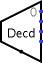

Decodificador
Decodificador
| Biblioteca: |
Plexers |
| Introdução: |
2.0 Beta 11 |
| Aparência: |
 |
Comportamento
Emitirá 1 em apenas em uma saída; a saída em 1 dependerá do valor corrente
recebido através da entrada na face sul.
Pinos (componente supondo voltado para leste)
- Na face leste, quantidade variável (saídas, com largura de 1 bit)
- As saídas são numeradas começando em 0 na face norte. Cada saída
será 1 se o seu número coincidir com o valor atual recebido pela
seleção da entrada na face sul; caso contrário, seu valor será zero ou
flutuante, dependendo do valor do atributo Tri-state?.
Se a selecção da entrada contiver quaisquer bits não especificados,
todas as saídas serão flutuantes.
- Na face sul (entrada, largura de acordo com o atributo Bits Selecionados)
- Entrada selecionada: o valor dessa entrada determinará quais as
saídas serão iguais a 1.
Atributos
Quando o componente for selecionado ou estiver sendo adicionado,
os dígitos de '1' a '4' irão alterar os seus Bits Selecionados
e as teclas com setas poderão alterar o seu atributo Direção
.
- Direção
- A direção do componente (especificará qual dos lados terá as saídas).
- Bits selecionados
- A largura em bits da entrada selecionada do componente na face sul.
O número de saídas para o decodificador será
2 Bits Selecionados .
- Tri-state?
- Especificará se as saídas não selecionadas deverão ser flutuantes (Sim) ou
zero (Não).
- Saída desabilitada
- Especificará qual deverá ser o valor de cada bit das saídas quando o
componente estiver desabilitado (ou seja, quando o pino de habilitação estiver
em 0). Opções incluem zero e flutuante; e neste caso, as saídas estarão
efetivamente desconectadas de quaisquer outras portas.
Comportamento da ferramenta Testar
Nenhum.
Comportamento da ferramenta Texto
Nenhum.
Voltar à Referência para bibliotecas